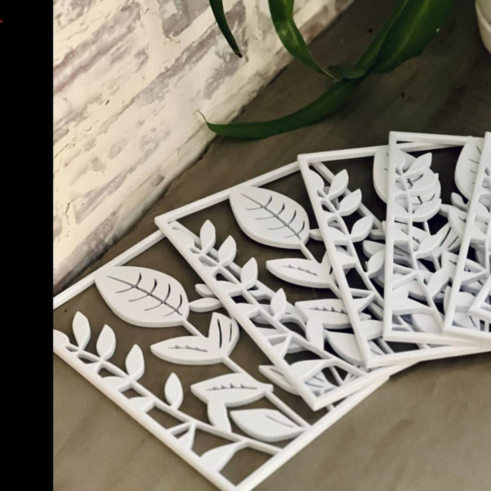

Product Gallery



Give your Gardyn Home system the support it deserves. This custom trellis kit is designed and 3D-printed by VetROponics Systems, a veteran-owned small business passionate about helping growers succeed.
The Gardyn Home system is an excellent hydroponic setup for growing fresh herbs and vegetables indoors. However, without proper support, your plants can become unruly and difficult to manage. Our custom trellis kit provides the structure your plants need to grow vertically, maximizing space and yield while keeping your garden organized and beautiful.
Designed specifically for the Gardyn Home, this kit ensures perfect compatibility and easy installation, giving you professional-grade results without the hassle.
Use the hook and loop sections to secure the bottom brackets to your Gardyn Home base.
Clip the trellis panels into place using the provided panel clips for stability.
Secure the top clips to provide additional support and guide your plants as they grow.
VetROponics Systems is a veteran-owned small business dedicated to providing high-quality hydroponic accessories. Founded by a Gulf War disabled veteran, we bring years of experience in manufacturing and customer service to every product we create.
We're passionate about sustainable growing and helping fellow growers achieve success. All our products are designed with care, made in the USA, and backed by our commitment to quality and customer satisfaction.
Ships from Texas for faster, eco-friendly delivery
Made to order in 3–5 business days
Carefully packaged to prevent damage
No tools are required. The kit uses a simple clip system that attaches directly to the Gardyn Home unit for quick and easy installation.
Yes. The trellis provides vertical support for plants that grow taller or produce heavier stems and fruit, helping keep your Gardyn organized and guiding plant growth upward.
Yes. The trellis kit is designed specifically to fit the Gardyn Home hydroponic system, ensuring a secure fit and proper support for your plants.
Yes. We offer a 7-day return window. If the product does not meet your expectations, you may return it within 7 days of delivery for a refund.
Get your custom trellis kit today and take your indoor garden to the next level.